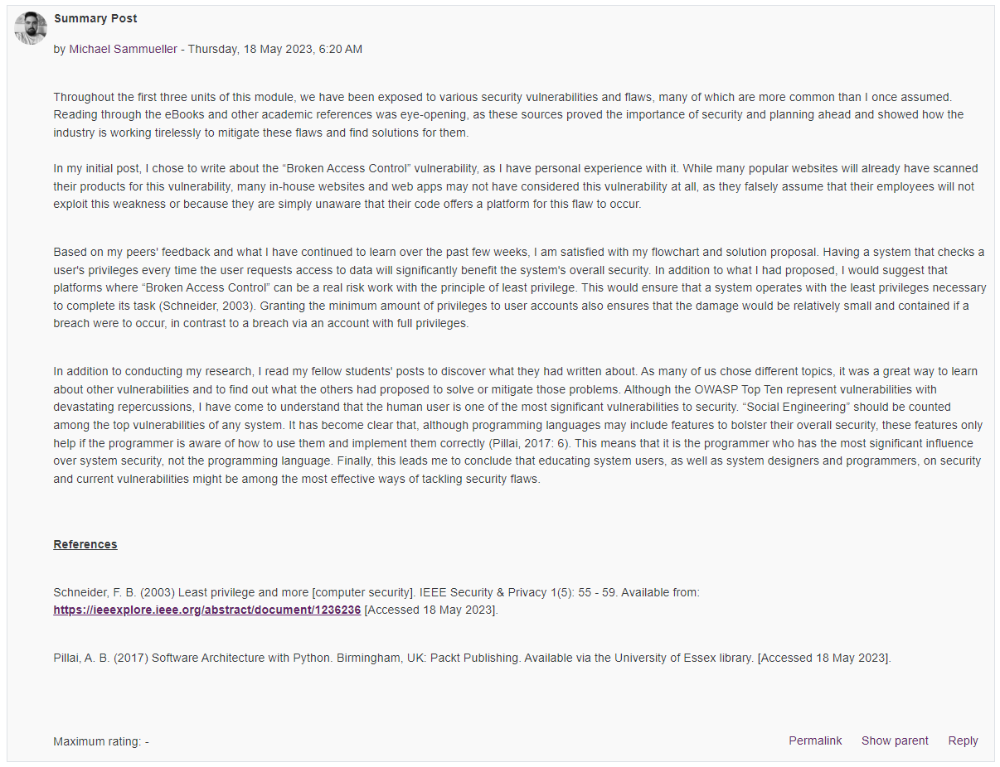
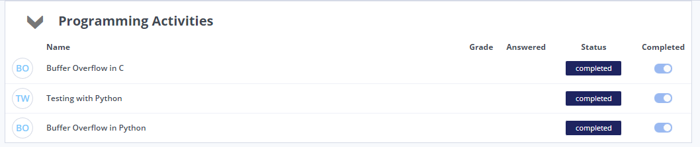
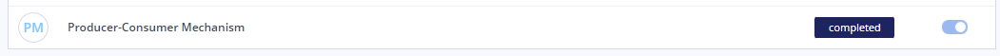
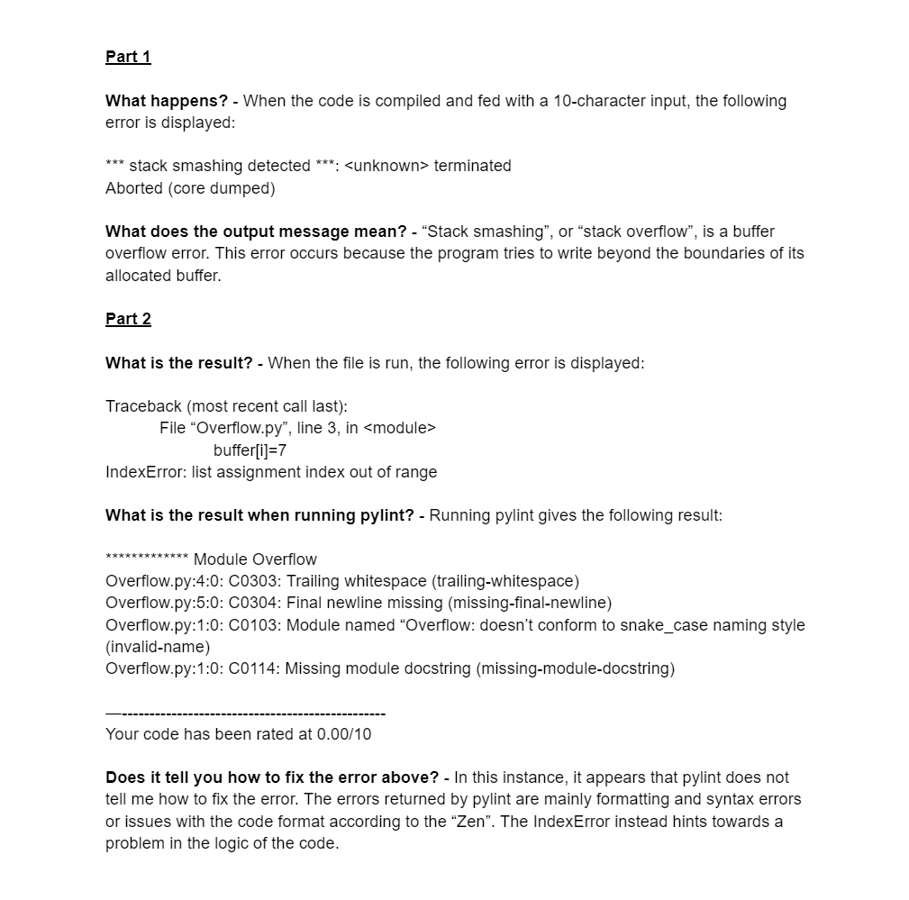
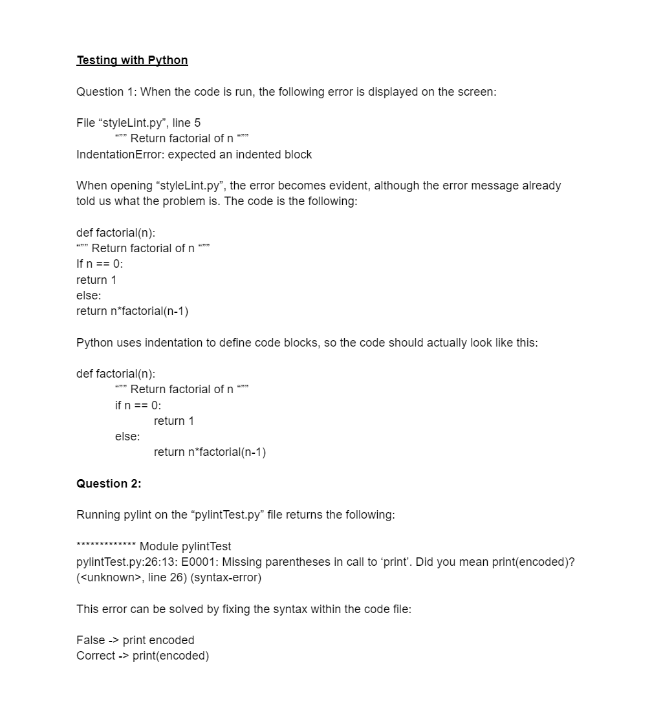
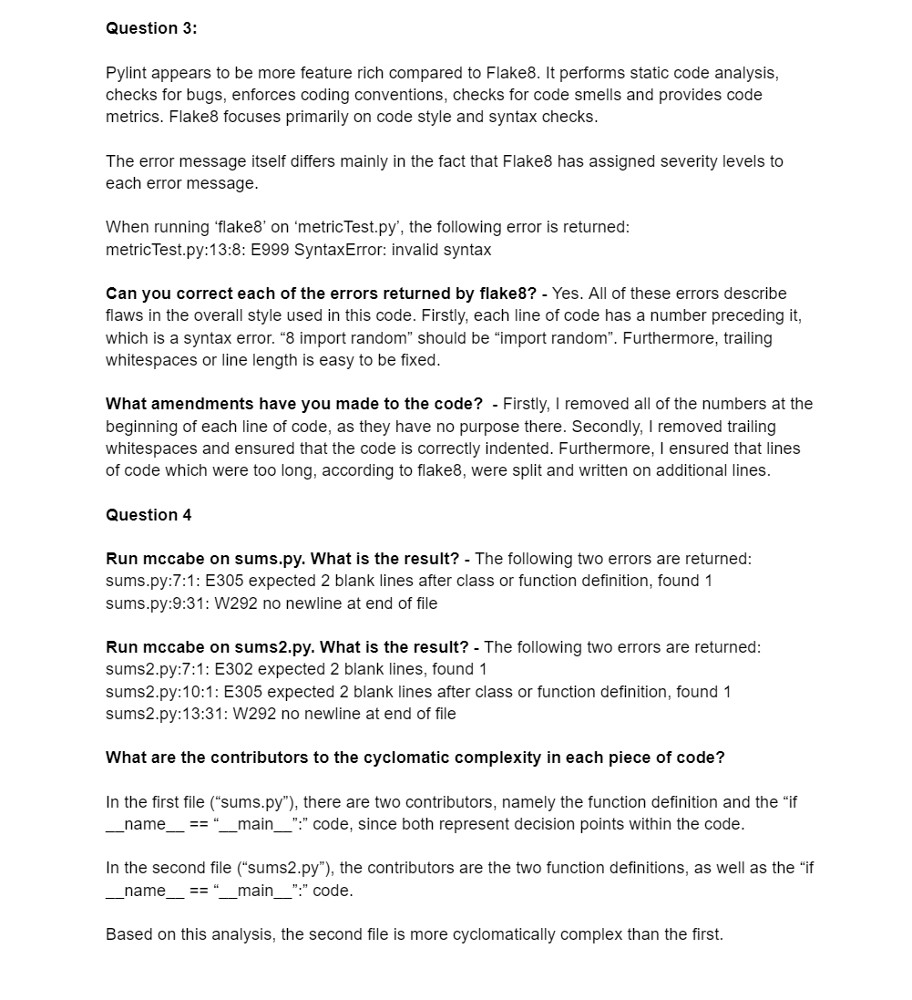
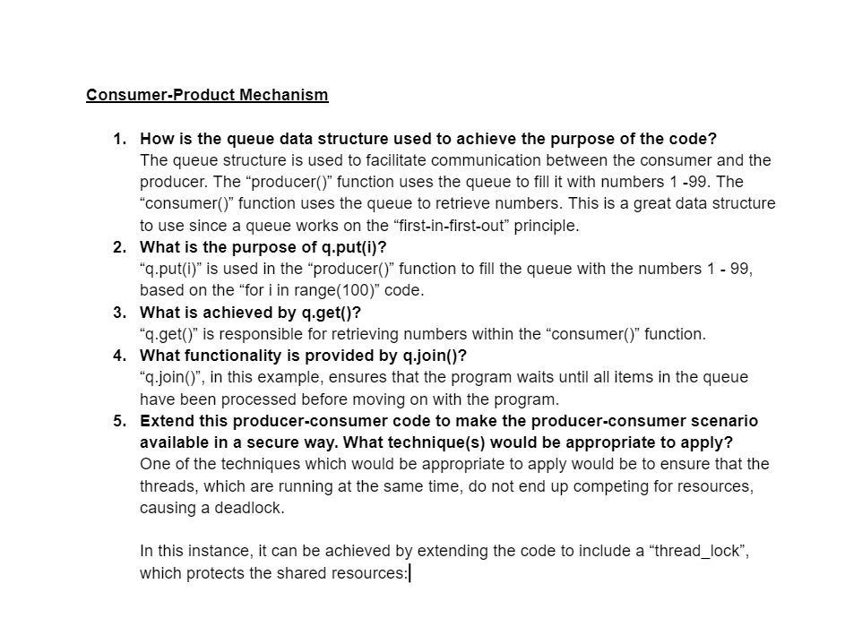
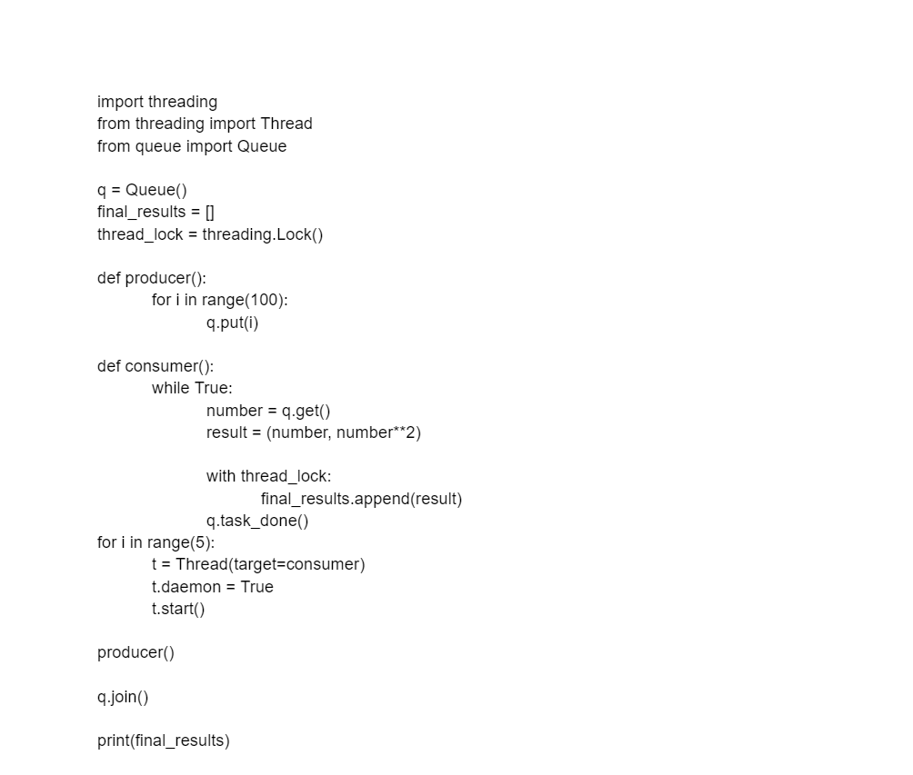
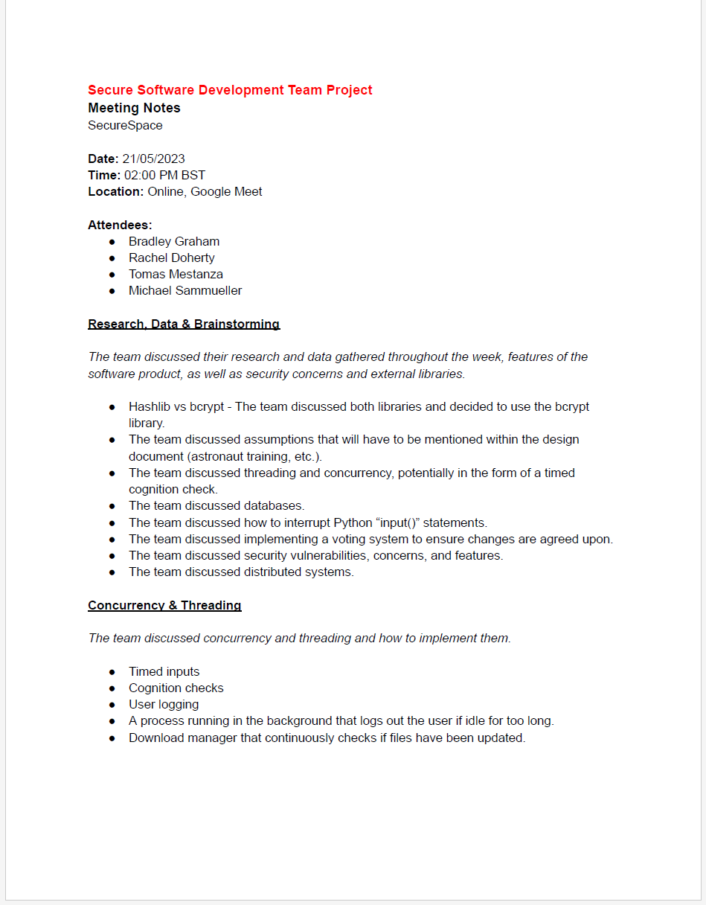
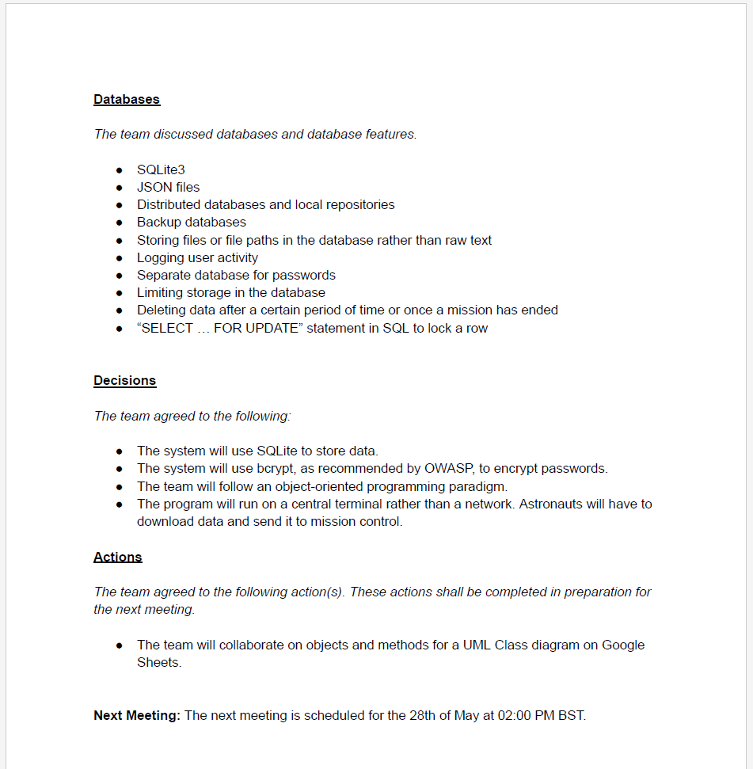

Unit 3: Artefacts
Collaborative Discussion
Part of this unit was to continue the collaborative discussion in Unit 1 by writing a summary post.
Summary Post
Team Discussion
I recorded the following notes in preparation for the team discussion:
What factors determine whether a programming language is secure or not?
As stated throughout my discussion forum posts, as well as in my responses to my fellow students, it is not necessarily the language which determines the security; it is how the language is implemented. Programming languages, such as Python, come with many packages and libraries to improve their security or to give tools to a programmer to make applications written with this language more secure. An example of this is the “hashlib” library that comes pre-installed with Python. This library includes many encryption algorithms. Python also inherently handles buffer overflow errors, unlike languages like C or C++, which could be used to argue that Python is more secure than those two languages. Python code is also more readable than C or C++, which can also affect the security of systems written in those languages.
To conclude, I would say that the following points determine how secure a programming language is:
- Memory Management: If the programming language requires manual memory management (like C or C++), this could inadvertently lead to security flaws and the above-mentioned buffer overflow errors
- Inbuilt Security: The features a language includes to facilitate security within a system directly influences how secure the language is.
- Programmer: As argued before, the programmer has the greatest influence on the code and how the language is implemented. Theoretically, a programming language could be designed to be extremely secure, but if it is poorly implemented and not used as intended, the system built upon it will not be secure.
Could Python be classed as a secure language? Justify your answer.
Python’s overall design makes it a secure language, although not without its flaws. Python syntax is easy to read, making it more reusable, understandable, and secure. As mentioned above, a Python programmer does not directly access a system's memory, rather, Python automatically handles memory management. This means common errors such as buffer overflows are less likely to occur than in other programming languages. One may also argue that since Python has a very active community of developers and is constantly updated and improved upon, it is a secure language.
Overall, I would like to reiterate that the security of a programming language depends largely on its use and implementation.
Python would be a better language to create operating systems than C. Discuss
I would disagree with this notion. C has been used to create operating systems for decades, the first being the UNIX operating system written in 1972 (Packt, 2019). The quantity of knowledge regarding OS development in C is much larger than in Python. C is also a compiled language, meaning it runs directly on the computer’s hardware. This means that it is much quicker and more efficient in execution than an interpreted language like Python. This also means that the programmer can define how memory is managed within the OS, while Python does its memory automatically.
References
Packt (2019) What is the history behind C Programming and Unix? Available from: https://hub.packtpub.com/what-is-the-history-behind-c-programming-and-unix/ [Accessed 18 May 2023].
Codio
Throughout this module, I completed the following codio activities:
 I took the following notes while completing the codio activities:
    Team Meeting
The team met again this week, as usual, to discuss progress in research and make final decisions about the software and design document. This meeting took much longer than the previous ones (about 2 hours), but we made a lot of progress.
Meeting Notes
I recorded the following meeting notes:
 